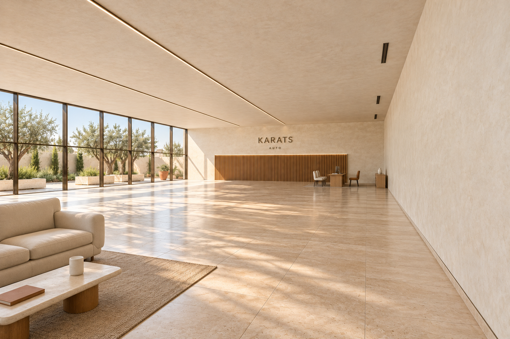
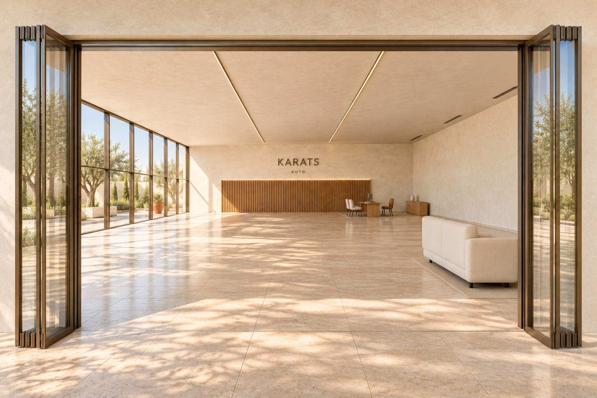
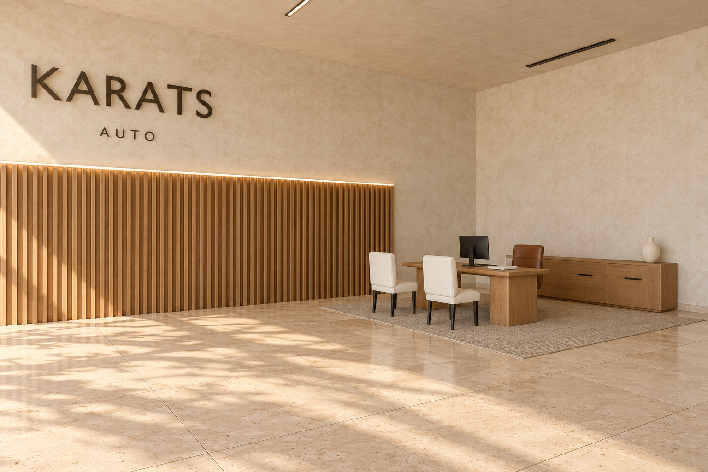
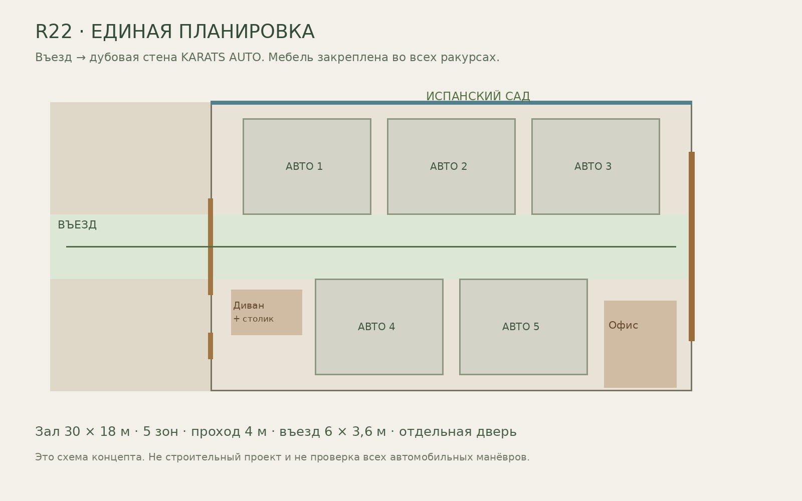
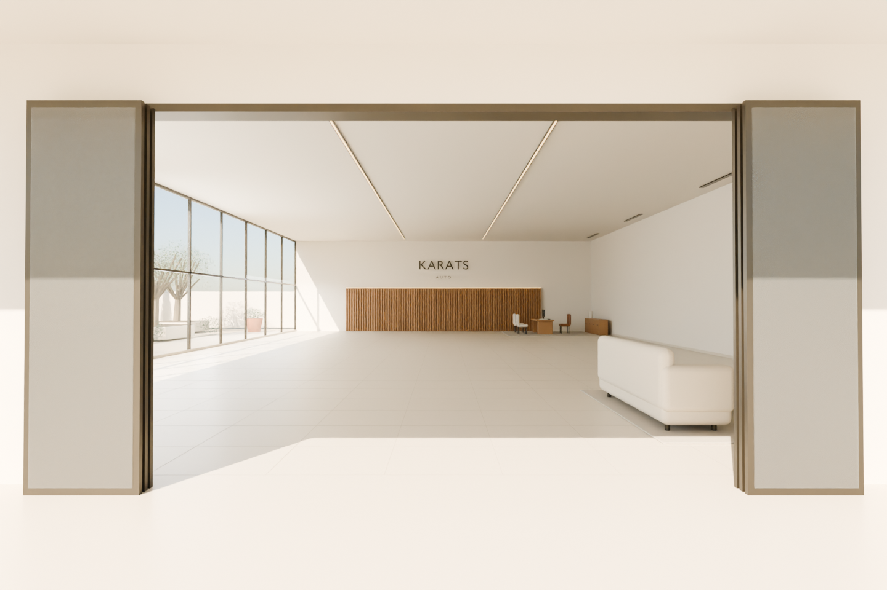
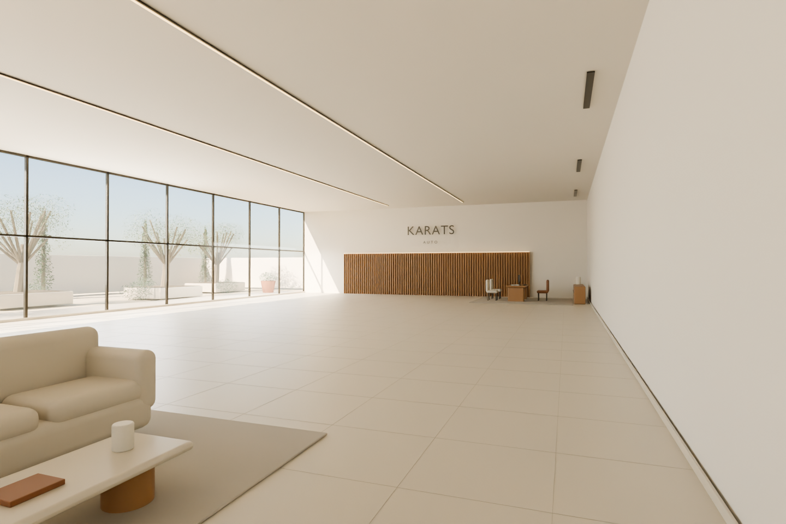
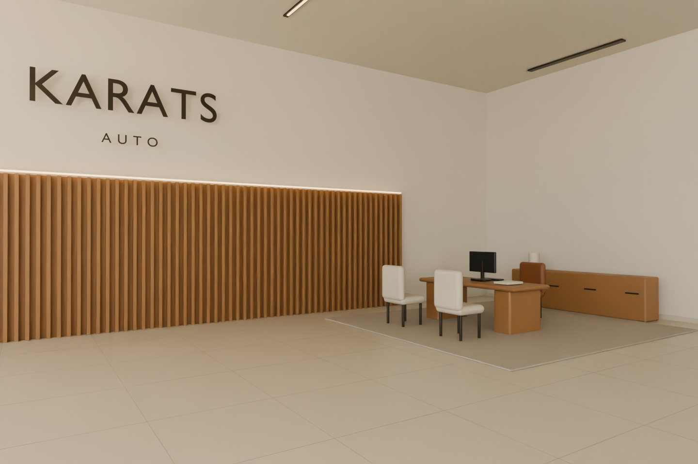
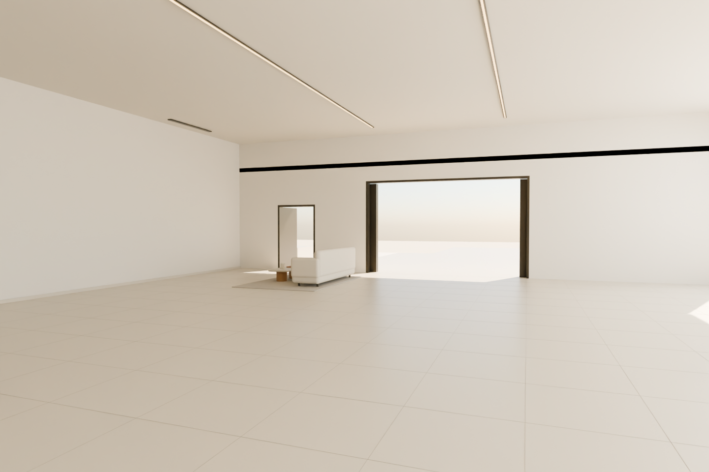

← Все версииR22. Один павильон.
Продуманный интерьер.
Дубовая стена с KARATS AUTO теперь стоит на оси въезда и видна через открытые ворота. Диван и журнальный столик у входа; рабочее место с тремя креслами в дальнем углу. Мебель, освещение и архитектура закреплены в одной модели.
Три изображения ниже: фотореалистичные визуализации по ракурсам общей модели. Это не фотографии построенного объекта и не проверенная фотосъёмка для реконструкции: мелкие детали AI могут различаться. Четыре точных ракурса единой геометрии показаны отдельно. Готовый мир Marble пока не создан.
Общий вид: диван, столик, рабочая зона и бренд

Вид через въезд: дубовая стена и KARATS AUTO на оси

Рабочая зона: стол, два гостевых кресла и кресло сотрудника

Одна планировка для всех кадров

Скачать обновлённую модель GLB · Промпт Marble
Точные ракурсы из одной 3D-сцены




Проверки и ограничения
Заново импортирован именно экспортированный GLB. Проверены размеры, мебель, четыре камеры и прямая видимость дуба и бренда от въезда. Мебель не пересекает пять зон и центральный проход. Строительные нормы и все повороты машин не проверены.
AI:1536×1024, requested high, reported low/low/medium. Технические виды:1440×960. Импорт именно в Marble не проверен.
Проверка экспорта · Проверка планировки · Полные ограничения